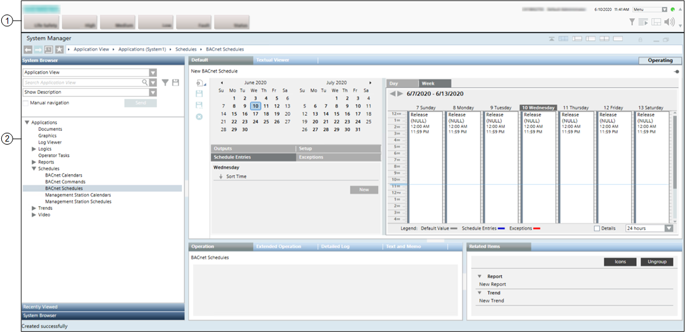

Main Screen Layout in Building Automation Profiles

1 | Summary bar | The main point of entry to all the functions of the software. It may be collapsed and you must click the down icon on the top right to display it. |
2 | Work area | Large central portion of the screen below the Summary bar. The window displayed here will vary depending on what system function is being used. It will typically contain the System Manager window. It can also display the Event List, or Investigative or Assisted Treatment windows, the system help and external documents or applications. |